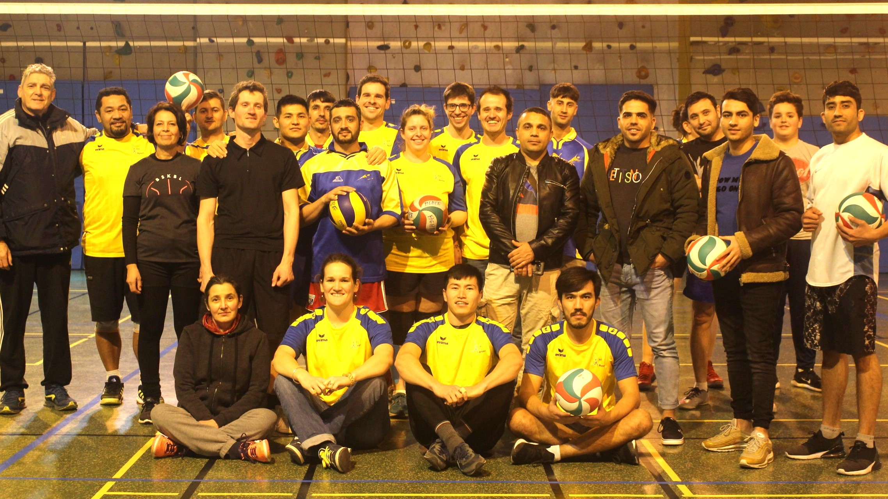

Section Volley
Responsable : Kéléto MASEI
07 77 08 16 13
Lundi 20h-22h
BOURG-LES-VALENCE - Gymnase Louis Jourdan
Le volley-ball est un sport d’équipe où la technique joue un rôle important pour chaque joueur.
Nos objectifs sont les suivants :
- Que nos membres puissent progresser par des exercices techniques simples afin d'obtenir une certaine aisance de jeu sans "se prendre la tête" !
- Créer une dynamique d'entraide, s’encourager et former un collectif.
- Faire en sorte que chaque personne puisse trouver sa place
Si ces ojectifs vous motivent, vous êtes le (la) bienvenu(e) quelque soit votre niveau.
La section est composée de deux groupes :- Une équipe évoluant en championnat Ufolep Drome-Ardèche
- Une section loisir
GALERIE PHOTOS


REVUE DE PRESSE

LE JUBILE DE DAVID TCHOGHANDJIAN
Le dimanche 9 février 2020, au gymnase Louis Jourdan à Bourg-Lès-Valence, s’est déroulé le jubilé de David, entraineur emblématique d’Agapé Athlétic Club, devenu depuis juin 2019 « Sport et Foi-Agapé ».
Un match amical a été organisé pour l'occasion contre l’équipe locale, composée en majorité de joueurs afghans. L’équipe de David était composée d’anciens joueurs de l’équipe Une qui n’ont pas perdu leur technique ni le sens du jeu, en gagnant le match par 3 sets à 1.
Membre du Conseil d’Administration des deux associations, David a toujours été présent bénévolement pour l’organisation de nombreux tournois de volley-ball. Il aura aussi été un entraineur proche de ses joueurs. Il a joué un rôle positif pour le club, notamment avec la montée d’une équipe en poule 1 au plus haut niveau du championnat Ufolep Drome-Ardèche des saisons 2011 à 2013.
Merci David pour ta générosité, ton bénévolat sans compter, et ta patience qui ont permis de construire ce club avec des valeurs, et de l’amener vers le haut !
son parcours
2006 à 2017 : Membre du CA
2007 à 2009 : Co-entraineur d’Agapé volley
2009 à 2017 : Entraineur principal
2012 : Distinction du "dirigeant méritant" de la part de la ville de Bourg-Lès-Valence